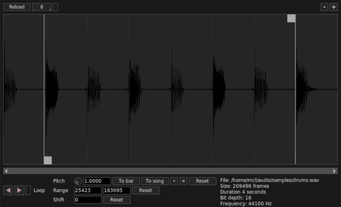
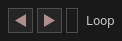
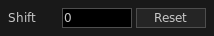

Giada includes a powerful editor for detailed sample manipulation. While the main window provides quick and basic interaction, the Sample Editor lets you adjust several parameters such as start and end points, pitch, and more.
The Sample Editor also provides basic tools for cutting, trimming, or silencing your sample. These are destructive operations: if you damage the sample, you will need to reload it from disk. Don't worry — the changes affect only the copy in memory, and the original file is never modified.
In the lower-right corner of the Sample Editor, you will find additional information about the currently loaded sample, such as the original file path, size (in audio frames), duration (in seconds), bit depth, and sample rate.
You can zoom in and out by clicking the Zoom buttons in the top-right corner, or by holding ctrl (cmd on macOS) and scrolling the mouse wheel.

The transport buttons let you preview the currently loaded audio sample. If you enable the Loop checkbox, the sample plays back in a loop. You can also press the spacebar key to start and stop playback. The playhead can be repositioned by clicking anywhere in the waveform area.
The Pitch knob stretches or compresses the sample, making it sound faster or slower. It works in the same way as a turntable pitch control slider. You can change the global resampling quality in the Configuration Window.
You can stretch the sample across the whole song or the current bar by pressing the To song and To bar buttons. Two additional operators, × and ÷, double or halve the sample's duration, while the Reset button restores the pitch to 1.0.
The range tool is used to define the sample's playback range through the begin and end points. These points are represented in the waveform area by two vertical lines with square handles: click and drag a handle to adjust a point quickly, or use the numeric input fields to specify the exact position in samples. The Reset button restores the default configuration.

The shift tool lets you move the sample horizontally. This is useful when you want the sample to start at a specific position without spending too much time cutting and pasting. The shift value is specified in samples and can be either positive or negative.
Select a portion of the waveform with the mouse and right-click it to open a menu with the following editing tools:
If your sample gets messed up after a mistaken edit, you can reload it from disk by clicking the Reload button .